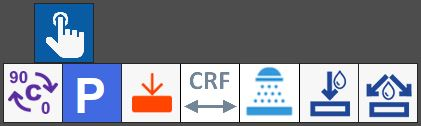

This panel provides access to several manual machine commands.

Buttons
 | 0_ - 90_ |
 | Parking |
 | SLAB PROBING |
 | CRF cycle |
 | Washing cycle |
 | Internal water On/Off |
Water On/Off |
Slab probing cycle
The probing cycle calculates the slab thickness and acquires the bench quote using the dedicated probe mounted on the machine.
To start it, enable the button in the manual commands panel, then press a point inside the slab in the work area.
A symbol is displayed at the selected position, indicating where probing must be performed.

Once the machine has completed the cycle, a panel opens showing measurements obtained by probing the slab.

This information includes:
Thickness | Measured slab thickness. |
Bench quote | Workbench quote. |
Slab quote | Position measured on the upper edge of the material placed on the workbench. |
The data collected by the probing cycle can be saved using the buttons below:
 | Set slab thickness |
 | Set bench quote |
 | Probing Start |
CRF (Flange Rotation Centre) measurement cycle
The CRF cycle measures the distance from the inside edge of the tooth of the disk currently mounted on the machine to the C rotation axis.
To start it, enable the button in the manual commands panel, then press a point inside the slab in the work area.
A symbol is displayed at the selected position, indicating where the disk cuts used to measure the CRF must be performed.
During this cycle, cuts are made in the material.
The operator is therefore advised to pay attention to the position on the slab where the cycle is started, to avoid damaging it.

The machine performs two parallel cuts with the A axis at 0_: the first with the C axis at 0_, and the second with the C axis at 180_.
At the end of the procedure, the operator is asked to measure the distance between the inside edges of the two cuts on the slab using a tape measure or calliper.
This measurement must then be entered in field “A” of the panel that opens at the end of the cycle.

The measurements taken must be entered in the appropriate field:
To | Internal distance between the two cuts made on the slab during the cycle. |
CRF (A/2) | Measurement of the disk Flange Rotation Centre. It is calculated as half the internal distance between the two cuts on the slab. |
The data collected during the CRF measurement cycle can be saved using the following button:
 | Set CRF Measure |